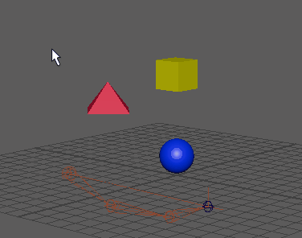

极向量约束使极向量的末端移动至并跟随一个对象的位置，或几个对象的平均位置。有关极向量约束的详细信息，请参见“极向量约束”。有关极向量约束的详细信息，请参见极向量约束。
创建极向量约束时，可以首先设定创建选项，然后创建极向量约束，或者可以立即使用当前创建选项创建约束。
创建极向量约束
- 选择一个或多个目标对象，后跟要约束其极向量的 IK 旋转平面控制柄。
- 选择“约束 > 极向量”(Constrain > Pole Vector) >
 以查看极向量约束选项。
以查看极向量约束选项。
- 设置以下选项：
- 单击“添加”(Add)或“应用”(Apply)以创建极向量约束。
- 在窗口的“编辑”(Edit)菜单中，选择“保存设置”(Save Settings)以保存约束选项。
- 在窗口的“编辑”(Edit)菜单中，选择“重置设置”(Reset Settings)以重置为默认的约束选项。
- 单击“关闭”(Close)以关闭“极向量约束选项”(Pole Vector Constraint Options)窗口。
